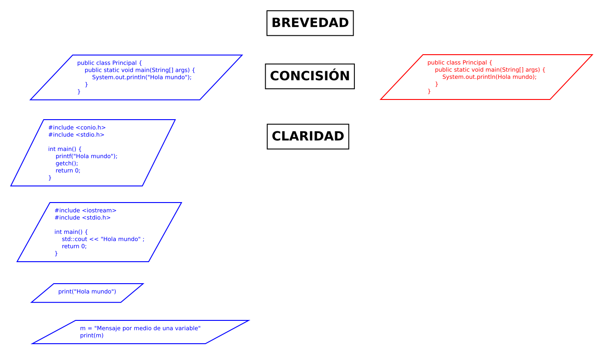

Características de los lenguajes de programación
Aplicación de los lenguajes de programación.
La siguiente figura muestra las características de un lenguaje de programación.

Por su objetivo: el lenguaje de programación sirve para comunicarse con la computadora para solicitar una operación o una información.
Por ejemplo: ordenar de menor a mayor los elementos de una lista de números.
numeros = [3,1,4,1,5]
resultado = []
for x in numeros
if x > 2
resultado.append(x)
print(resultado)
Investigación de José Sánchez Juárez
Definición de paradigma
Tomado del diccionario de la Real Academia Española.
2. m. Teoría o conjunto de teorías cuyo núcleo central se acepta sin cuestionar y que suministra la base y modelo para resolver problemas y avanzar en el conocimiento.
3. m. Ling. Relación de elementos que comparten un mismo contexto fonológico, morfológico o sintáctico en función de sus propiedades lingüísticas.
4. m. Ling. Esquema formal en el que se organizan las palabras que admiten modificaciones flexivas o derivativas.
Paradigma de programación
Es la forma fundamental de pensar para escribir y organizar el código. Es una mentalidad. Es como se resuelve un problema, se estructura una solución y como se razona acerca de un sistema. No es un estilo de escribir código.
El paradigma de la programación es una forma de pensar que guia como estructurar y resolver problemas mediante código. Esto te muestra como abordar la solución de un problema: que conceptos, que patrones debes usar, y como debes administrar la complejidad.
El paradigma es un modelo mental o cosmovisión. Es el lente por medio del cual definimos los problemas y construimos los programas. Para lo cual, los paradigmas son los siguientes:
Un paradigma te da un marco de trabajo para organizar el código y manipular el flujo de ejecución.
El paradigma nos permite lo siguiente:
Los tipos de paradigmas son:
Imperative Programming, Theophilus Edet, 2025
Programming paradigm, Michael Williams, 2025
Formas de programar.
Programar no es escribir instrucciones para una computadora. Es resolver problemas por medio de estructuras, lógica, e intenciones.
Los siguientes son métodos de estructuración: Composición: Si S1, S2, ... , Sk son enunciados, k >= 0, entonces su composición es una lista de enunciados que se escribe así; S1 ; S2 ; ... ; Sk El control fluye de manera secuencial a través de la lista. Condicional: Si E es una expresión y LE1, y LE2 son listas de enunciados, entonces un enunciado condicional formados por esos elementos sería: Otra variante, es: Ciclo infinito: Si LE es una lista de enunciados, entonces una iteración o ciclo es: Ciclo while: Si E es una expresión y LE una lista de enunciados, entonces un ciclo while formado a partir de esos elementos puede escribirse de la siguiente forma: Enunciado de asignación:
if E then LE1 else LE2 end
if E then LE end
loop LE end
while E do LE end
Expresiona := Expresion1
x := A[i]
A[i] := x
return Expresion
Programming paradigm, Michael Williams, 2025